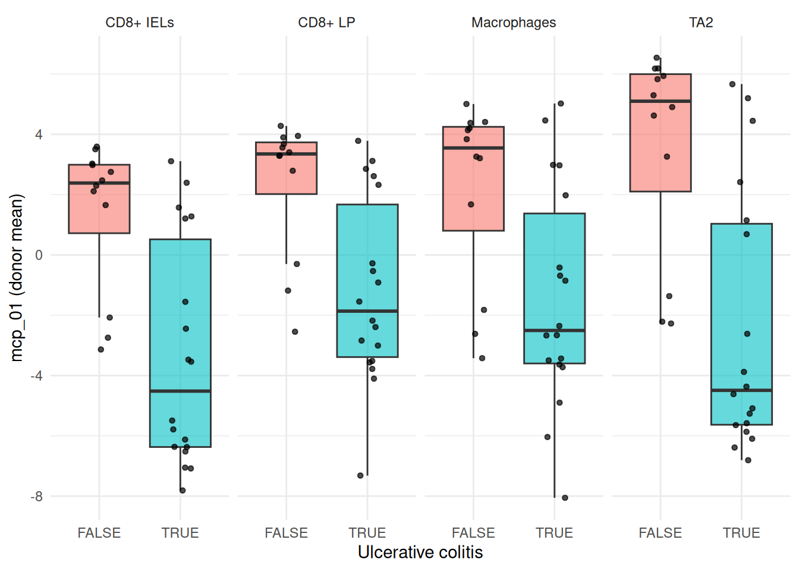

library(bixverse)
library(bixverse.plots)
library(ggplot2)
library(data.table)
#>
#> Attaching package: 'data.table'
#> The following object is masked from 'package:base':
#>
#> %notin%
library(magrittr)Multicellular programmes with DIALOGUE
2026-09-04
Intro
Most programme discovery methods ask what varies together within a cell type. NMF on the T cells gives you T cell programmes; Hotspot on the macrophages gives you macrophage programmes. Neither tells you whether the T cell programme and the macrophage programme are the same thing seen from two sides.
DIALOGUE asks the other question. It looks for multicellular programmes (MCPs): axes of variation that show up in several cell types at once, sample by sample. If macrophages in a biopsy sit high on some axis and the epithelial cells in the same biopsy also sit high, and that holds across enough biopsies, then whatever those cells are doing is coordinated rather than independent.
Three stages, and it is worth knowing the shape before you run it:
- Each cell type’s features are averaged to one row per sample and put through a sparse multi-CCA. That gives every programme a weight vector per cell type and a provisional gene signature.
- For every ordered pair of cell types and every candidate gene, a mixed model asks whether a cell’s own programme score tracks the partner cell type’s expression of that gene in the same sample. The random intercept is over samples.
- The partners are meta-analysed, and the scores are refit onto the surviving genes by non-negative least squares.
If you have not read the design choices and the introductory vignette, please do so first; this one assumes you know how SingleCells, subsets and on-disk storage work.
DIALOGUE needs a study design, not just a lot of cells
Because stage one works on per-sample averages, DIALOGUE needs multiple samples and multiple cell types, with every cell type captured in every sample.
bixversehard-errors below five samples present in all cell types, and drops samples that do not clearabn_ccells for a given cell type.This is the thing that catches people out. A beautiful 500k cell atlas from one donor is useless here. Ten scrappy biopsies are not.
The data
We use the ulcerative colitis subset from the DIALOGUE paper, originally from Smillie, et al.. 5,374 cells across five cell subtypes and 30 donors: twelve healthy, eighteen with UC who each contributed an inflamed and a non-inflamed biopsy.
One provenance note. The published matrix holds log2(TPM / 10 + 1) and the raw counts were never released, so the file served here has been linearised back to the TPM/10 scale and rounded to integers. It therefore loads like any count matrix and picks up bixverse’s own log CPM on the way in. That is fine for DIALOGUE, which only ever reads the normalised layer.
dialogue_h5ad <- download_dialogue_uc()
tempdir_dlg <- file.path(tempdir(), "dialogue_uc")
dir.create(tempdir_dlg, showWarnings = FALSE, recursive = TRUE)
sc_object <- SingleCells(dir_data = tempdir_dlg)
sc_object <- load_h5ad(
object = sc_object,
h5_path = dialogue_h5ad,
.verbose = FALSE
)
sc_object
#> Single cell experiment (Single Cells).
#> No cells (original): 5374
#> To keep n: 5374
#> No genes: 6329
#> HVG calculated: FALSE
#> PCA calculated: FALSE
#> Other embeddings: none
#> KNN generated: FALSE
#> SNN generated: FALSE
#> MAGIC imputed: none
#> Stale artefacts: noneBefore anything else, look at the design. This is the table that decides whether DIALOGUE can run at all.
obs <- get_sc_obs(sc_object, filtered = TRUE)
table(obs$cell_subtype, obs$clinical_status)
#>
#> Healthy Inflamed Non-inflamed
#> CD8+ IELs 409 145 198
#> CD8+ IL17+ 24 45 30
#> CD8+ LP 429 367 370
#> Macrophages 543 450 459
#> TA2 723 568 614CD8+ IL17+ is the problem: 99 cells in total, and completely absent from twelve of the thirty donors. A cell type missing from a sample means that sample cannot contribute to any pair involving it, so the sensible move is to drop the cell type rather than lose the samples. pertpy’s DIALOGUE tutorial does the same thing on the same data.
sc_object <- set_cells_to_keep(
x = sc_object,
cells_to_keep = obs[cell_subtype != "CD8+ IL17+", cell_id]
)
sc_object <- find_hvg_sc(sc_object, hvg_no = 2000L, .verbose = FALSE)
obs <- get_sc_obs(sc_object, filtered = TRUE)
cell_types <- sort(unique(obs$cell_subtype))
cell_types
#> [1] "CD8+ IELs" "CD8+ LP" "Macrophages" "TA2"
min(table(obs$sample, obs$cell_subtype))
#> [1] 2Four cell types, thirty donors, and the sparsest donor-by-cell-type cell still has cells in it. That is a design DIALOGUE can work with.
Per-cell-type features
This is the step to get right, and the one the documentation warns about: the features you hand DIALOGUE must be computed per cell type, not sliced out of a global PCA. A global PCA’s leading components mostly separate the cell types from each other, so slicing it hands every cell type the same axis and DIALOGUE dutifully reports that the cell types agree with themselves.
So: subset, find variable genes within the subset, run a PCA within the subset.
features <- purrr::map(cell_types, \(ct) {
sub <- SingleCellsSubset(
sc_object = sc_object,
grouping_column = "cell_subtype",
group = ct
)
sub <- find_hvg_sc(sub, hvg_no = 2000L, .verbose = FALSE)
sub <- calculate_pca_sc(sub, no_pcs = 10L, .verbose = FALSE)
get_pca_factors(sub)
})
names(features) <- cell_types
purrr::map(features, dim)
#> $`CD8+ IELs`
#> [1] 752 10
#>
#> $`CD8+ LP`
#> [1] 1166 10
#>
#> $Macrophages
#> [1] 1452 10
#>
#> $TA2
#> [1] 1905 10features is a named list of matrices, names matching the cell type labels, row names matching cell ids. Rows are matched by name rather than position, so the order does not matter, but the coverage does: every cell of that type has to be in there.
Running it
Three parameter bundles, one per stage. The defaults follow upstream’s DLG.get.param, and the two knobs worth thinking about live in params_dialogue_pmd(): k is how many programmes you are asking for, with no sweep to help you pick it, and n_permutations sets the resolution of the empirical p-value.
We ask for three programmes, matching what pertpy reports on this data.
dlg_res <- dialogue_sc(
object = sc_object,
cell_type_col = "cell_subtype",
sample_col = "sample",
features = features,
quality_col = "cell_q",
pmd_params = params_dialogue_pmd(k = 3L, n_permutations = 100L)
)
dlg_res
#> DialogueResult (multicellular programmes)
#> Source class: SingleCells
#> Cell types: 4 (CD8+ IELs, CD8+ LP, Macrophages, TA2)
#> Shared samples: 30
#> Programmes: 3
#> mcp_01 - worst pair p: 0.0448 | spans 4 cell type(s)
#> mcp_02 - worst pair p: 0.1127 | spans 4 cell type(s)
#> mcp_03 - worst pair p: 0.08292 | spans 4 cell type(s)
#> Genes with a verdict: 1395
#> Signature genes: 1168 permissive | 799 strictquality_col = "cell_q" is the per-cell quality score the original paper shipped with this data. Leave it NULL and bixverse falls back to the z-scored log library size instead. That choice matters more than it looks, and we come back to it below.
Reading the output
get_results() gives the programme table: one row per programme per ordered pair of cell types, with the empirical p-value and the correlation between the two cell types’ sample-level scores.
get_results(dlg_res)
#> programme cell_type_a cell_type_b emp_p pair_cor
#> <int> <char> <char> <num> <num>
#> 1: 1 CD8+ IELs CD8+ LP 0.04480159 0.9186660
#> 2: 2 CD8+ IELs CD8+ LP 0.06371927 0.6268279
#> 3: 3 CD8+ IELs CD8+ LP 0.05551659 0.6293367
#> 4: 1 CD8+ IELs Macrophages 0.04480159 0.8735931
#> 5: 2 CD8+ IELs Macrophages 0.04480159 0.8026124
#> 6: 3 CD8+ IELs Macrophages 0.04817104 0.6640532
#> 7: 1 CD8+ IELs TA2 0.04480159 0.9256057
#> 8: 2 CD8+ IELs TA2 0.07283526 0.5953537
#> 9: 3 CD8+ IELs TA2 0.04480159 0.7620888
#> 10: 1 CD8+ LP Macrophages 0.04480159 0.9521887
#> 11: 2 CD8+ LP Macrophages 0.04817104 0.7600446
#> 12: 3 CD8+ LP Macrophages 0.04817104 0.7119079
#> 13: 1 CD8+ LP TA2 0.04480159 0.9452754
#> 14: 2 CD8+ LP TA2 0.04480159 0.7362233
#> 15: 3 CD8+ LP TA2 0.08291775 0.6008835
#> 16: 1 Macrophages TA2 0.04480159 0.9129270
#> 17: 2 Macrophages TA2 0.11266125 0.5873035
#> 18: 3 Macrophages TA2 0.05174027 0.6392640A programme is only interesting if it holds up across every pair, so the number to look at is the worst p in each programme, which is what print() reports. With n_permutations = 100 the p-value cannot go below roughly 0.01, so do not read too much into the exact values; raise it for anything you intend to believe.
refit_fidelity says how well each cell type’s score survived stage three, i.e. how much of the programme is really carried by the genes that passed the mixed model.
round(dlg_res$refit_fidelity, 3)
#> mcp_01 mcp_02 mcp_03
#> CD8+ IELs 0.947 0.463 0.775
#> CD8+ LP 0.943 0.787 0.734
#> Macrophages 0.985 0.884 0.898
#> TA2 0.938 0.827 0.877The signatures come in two flavours. permissive and strict are nested by evidence rather than by threshold, and strict is the one to quote.
dcast(
dlg_res$signatures[
list == "strict",
.N,
by = .(cell_type, programme, direction)
],
cell_type + programme ~ direction,
value.var = "N"
)
#> Key: <cell_type, programme>
#> cell_type programme down up
#> <char> <int> <int> <int>
#> 1: CD8+ IELs 1 76 25
#> 2: CD8+ IELs 2 NA 3
#> 3: CD8+ IELs 3 3 7
#> 4: CD8+ LP 1 69 58
#> 5: CD8+ LP 2 10 4
#> 6: CD8+ LP 3 12 21
#> 7: Macrophages 1 187 156
#> 8: Macrophages 2 NA 15
#> 9: Macrophages 3 10 48
#> 10: TA2 1 36 33
#> 11: TA2 2 NA 11
#> 12: TA2 3 4 11Does it track the disease?
The scores are a named list, one cells-by-programme matrix per cell type. Average them up to the donor and compare across UC status.
score_dt <- rbindlist(purrr::imap(dlg_res$scores, \(mat, ct) {
data.table(cell_id = rownames(mat), cell_type = ct, as.data.table(mat))
}))
score_dt <- merge(
score_dt,
obs[, .(cell_id, sample, pathology, clinical_status, lib_size)],
by = "cell_id"
)
per_sample <- score_dt[,
lapply(.SD, mean),
by = .(sample, cell_type, pathology),
.SDcols = patterns("^mcp_")
]
per_sample[,
.(p = signif(wilcox.test(mcp_01 ~ pathology)$p.value, 3)),
by = cell_type
]
#> cell_type p
#> <char> <num>
#> 1: TA2 0.000239
#> 2: CD8+ LP 0.000956
#> 3: CD8+ IELs 0.000542
#> 4: Macrophages 0.010100mcp_01 separates UC donors from healthy ones in all four cell types at once, which is the thing DIALOGUE exists to find. Plotted:
ggplot(
per_sample,
aes(x = pathology, y = mcp_01, fill = pathology)
) +
geom_boxplot(outlier.shape = NA, alpha = 0.6) +
geom_jitter(width = 0.15, size = 1.2, alpha = 0.7) +
facet_wrap(~cell_type, nrow = 1) +
labs(x = "Ulcerative colitis", y = "mcp_01 (donor mean)") +
theme_minimal() +
theme(legend.position = "none")
Before you believe it: check the confounders
Here is where a vignette that wanted to look good would stop. Do not stop here.
A programme that shows up in every cell type at once is exactly what a technical axis looks like. Depth, capture efficiency and ambient RNA hit all cell types in a sample together, which is precisely the signature DIALOGUE is built to detect. So before reading any biology into mcp_01, correlate it against the quality covariates.
That is not a small correlation. mcp_01 is tracking library size at rho ~ 0.5 in every cell type, and library size itself differs between the UC and healthy donors on this subset. So a good chunk of what we just called a disease programme is a depth axis wearing a lab coat.
The fix is to condition on the right covariate. cell_q is the paper’s own quality score and it barely correlates with mcp_01 here, so it was never going to absorb this. The library-size covariate will.
dlg_lib <- dialogue_sc(
object = sc_object,
cell_type_col = "cell_subtype",
sample_col = "sample",
features = features,
quality_col = NULL,
pmd_params = params_dialogue_pmd(k = 3L, n_permutations = 100L),
.verbose = FALSE
)
score_lib <- rbindlist(purrr::imap(dlg_lib$scores, \(mat, ct) {
data.table(cell_id = rownames(mat), cell_type = ct, as.data.table(mat))
}))
score_lib <- merge(
score_lib,
obs[, .(cell_id, sample, pathology, lib_size)],
by = "cell_id"
)
score_lib[,
.(rho = round(cor(mcp_01, lib_size, method = "spearman"), 3)),
by = cell_type
]
#> cell_type rho
#> <char> <num>
#> 1: TA2 0.181
#> 2: CD8+ LP 0.239
#> 3: CD8+ IELs 0.068
#> 4: Macrophages 0.276Much better. Two things to notice about what changed and what did not.
The programme table and the p-values are identical to the first run. That is not a bug: the quality covariate only enters stage two, so stage one’s decomposition and its permutation null never saw it.
What did change is the signature. Conditioning on depth drops the strict gene count by more than half, because the genes that were only there to track library size no longer clear the mixed model.
And the disease association survives.
score_lib[,
lapply(.SD, mean),
by = .(sample, cell_type, pathology),
.SDcols = patterns("^mcp_")
][,
.(p = signif(wilcox.test(mcp_01 ~ pathology)$p.value, 3)),
by = cell_type
]
#> cell_type p
#> <char> <num>
#> 1: TA2 0.013200
#> 2: CD8+ LP 0.004990
#> 3: CD8+ IELs 0.000239
#> 4: Macrophages 0.007700So there is a real coordinated programme here, it is just a good deal smaller than the first run advertised. That is the normal outcome of doing this check, and it is why you do it.
Caveats and what is next
A few things worth knowing before you point this at your own data.
-
khas no sweep. Unlikenmf_k_sweep_sc(), there is no diagnostic to pick the number of programmes. Run a few values and look at whether the extra programmes hold up across every pair. -
satterthwaitedominates the runtime. Turning it off inparams_dialogue_hlm()falls back to the residual count for the degrees of freedom, which is faster and usually close enough for a first pass. -
The random intercept level is a real modelling choice. We used the donor, matching the original analysis. Using the biopsy instead (
paste(sample, clinical_status)) would let the inflamed and non-inflamed samples from one patient separate, at the cost of samples that then fall belowabn_c. -
Meta cells have to be built within samples. Otherwise the random intercept has no well-defined level.
meta_cells_per_group()withgroup_colset to your sample column does exactly that, anddialogue_sc()dispatches onMetaCellsthe same way it does onSingleCells. You have to aggregate the features over each meta cell’s membership yourself. - This is a four-cell-type slice of a fifty-one-cell-type atlas. The published UC programme spanned cell types that are simply not in this file, so partial agreement with the paper is the expected result rather than a failure.
Clean up
unlink(tempdir_dlg, recursive = TRUE, force = TRUE)